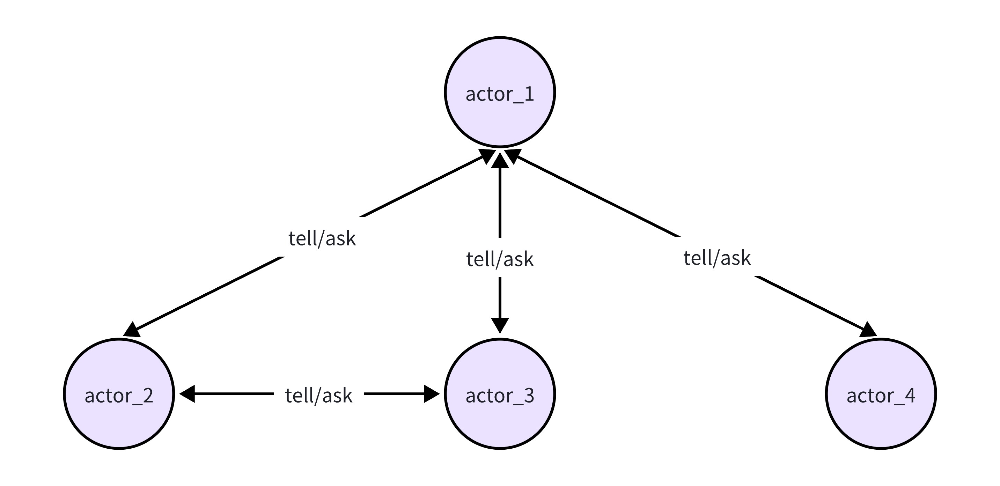
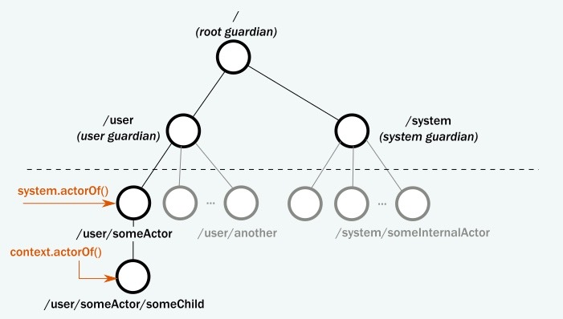

阅读Flink之前，需要准备一些前置知识，比如IO框架、SPI机制、动态代理等，设计模式和IO知识其它文章都有过记录，也做过深入的研究，本篇重点梳理Akka
AKKA简介
Akka是一个开源工具包，用于构建高并发、分布式和容错系统。它基于Actor模型，其中所有的并发单元是称为”Actor”的轻量级实体。
Actor模型

Actor 核心概念
ActorSystem
ActorSystem是Akka应用的核心。它是一个运行时环境，负责创建和管理Actor。
1 | import akka.actor.ActorSystem |
Actor
创建一个简单的Actor：
1 | import akka.actor.{Actor, Props} |
Actor消息传递
通过 ! 向Actor发送消息：
1 | myActor ! "Hello, Akka!" |
Actor 路径体系

guardian
“guardian”通常指的是顶级的 Guardian Actor。 每个Actor都有⼀个父Actor，而顶级的 Guardian Actor就是所有Actor的最高层父Actor。
在Akka的Actor层次结构中， /user 是 root Guardian Actor的子Actor，而所有由⽤户代码创建 的Actor都是 /user 的子孙。
这种层次结构对于Actor的创建和管理非常重要。 例如，使用 ActorSystem.actorOf 创建的Actor将成为 /user 的子Actor。
supervisor
“Supervisor”（监督者）是一个概念，指的是负责监督和管理其他Actor的特殊类型Actor。 Supervisor负责处理子Actor的生命周期、处理
Actor之间的通信
1 | class MyParentActor extends Actor { |
小结
Akka 底层其实还是netty，它的actor模型就像是netty的reactor模型的简化，其中actor角色就像是selector角色，actorref 就像是一个channel，但用起来要更简单一些，不需要过多的考虑传输协议，可以直接通过对象进行传输。

...
...
00:00
00:00
This is copyright.